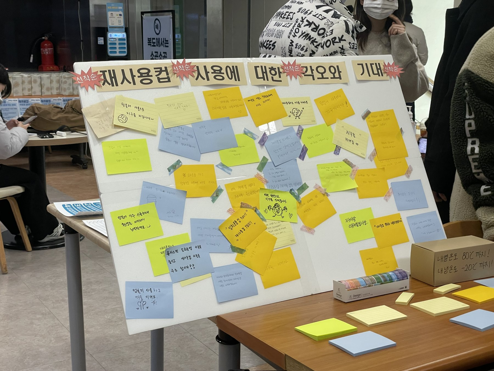

2021 – 2023
라온S 회장 · 학과 공식 소모임
미디어기술콘텐츠학과 공식 소모임 라온S의 회장으로, 부천시 청년 커뮤니티 지원사업 ‘청년부터 시작하는 녹색 습관: 재사용 컵 문화’를 기획하고 영상·게임·리유저블 컵 부스까지 세 갈래 프로젝트로 이끌었습니다.

가톨릭대학교 미디어기술콘텐츠학과의 공식 소모임 라온S에서 활동했고, 회장을 맡아 한 해의 계획과 예산, 운영을 책임졌습니다.
문제에서 시작 · 부천시 생태 하천 복원 기사를 보고 심곡복개천을 직접 답사했는데, 조경 사이에 쌓인 쓰레기 중 가장 많은 것이 플라스틱 테이크아웃 컵이었습니다. 누군가 계속 치워야만 유지되는 구조를 바꾸고 싶어, 2022년 부천 청년 커뮤니티 지원사업에 ‘청년부터 시작하는 녹색 습관: 재사용 컵 문화’로 지원했습니다.
① 홍보 영상 ‘MBTI 탐구 생활: 재사용컵 편’ · 일회용 컵을 가장 많이 쓰는 청년층을 겨냥해, 성향이 다른 두 인물이 다회용 컵을 쓰게 되는 과정을 MBTI로 풀었습니다.
② 로블록스 게임 ‘심곡천의 환경을 지켜요’ · 심곡천을 배경으로 맵 곳곳에 버려진 일회용 컵을 주워 정해진 곳에 버리는 온라인 게임입니다. 일정 개수 이상 주운 플레이어에게는 라온S가 만든 리유저블 컵을 증정했습니다.
③ 리유저블 컵 제작과 나눔 부스 · 재사용 컵을 직접 디자인하고 제작해, 부천시 청년들에게 나눠주는 부스를 운영했습니다. 참여자들이 포스트잇에 재사용 컵 사용 각오를 남기도록 했습니다.
내 역할 · 회장으로서 문제 발견과 현장 답사부터 지원서, 세 프로젝트 구성까지 전체를 기획했습니다(지도 임학순 교수님). 「프랜차이즈 커피매장의 일회용 컵 줄이기에 대한 방안」 논문을 참고해 방향을 잡았고, 예산안과 결산, 리유저블 컵 디자인과 홍보 포스터 제작, 부스 운영, 프로젝트 소개 사이트 제작과 결과 보고까지 맡았습니다. 영상은 이채연·황민기·김서호, 게임은 정화영·김예원 팀원이 함께 만들었습니다.